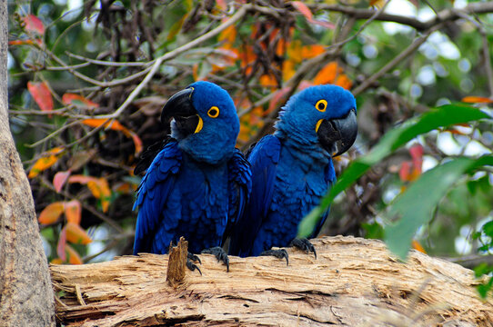
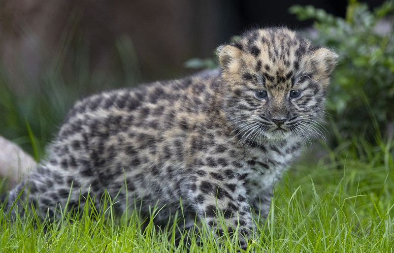
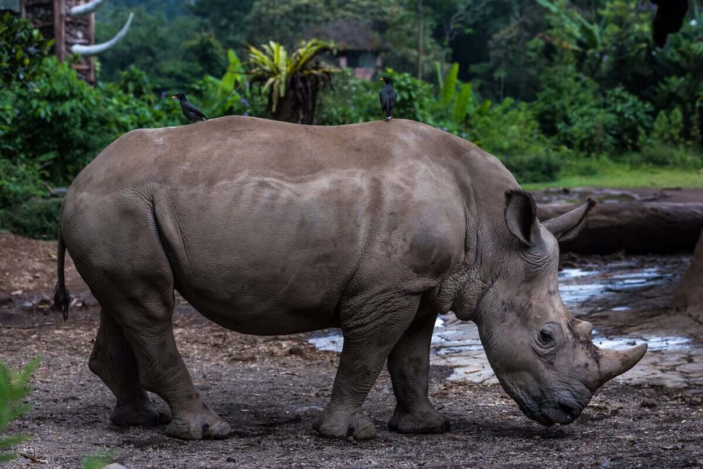

Animais em Estado de Extinção
Início
Animais em Risco
Informações
3 Animais em Estado de Extinção
Vaquita
Saber mais

Leopardo de amur
Saber mais

Rinoceronte de java
Saber mais
Informações Adicionais
Todos os animais em estado extinção
Saber mais
Formulario
clike aqui